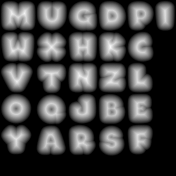

<body>
<h1>Morph Test</h1>
<canvas id="c" width="800" height="400"></canvas>
<script src="js/twgl/twgl-full.min.js"></script>
<script id="vs" type="notjs">
    attribute vec4 position;
    
    void main() {
      gl_Position = position;
    }
</script>
<script id="fs" type="notjs">
    precision mediump float;
    
    uniform sampler2D u_fonttex;
    uniform vec2 resolution;
    uniform float time;

    // polynomial smooth min
    float smin( float a, float b, float k )
    {
        float h = max( k-abs(a-b), 0.0 )/k;
        return min( a, b ) - h*h*k*(1.0/4.0);
    }
    
    void main() {
        float sdft = 1.0 - fract( time*3.0 );
        float sdfb = mix( 0.5, 0.65, sdft );

        float aspect = resolution.x / resolution.y;
      vec2 uv = (gl_FragCoord.xy / resolution) * vec2( aspect, 1.0 );
      
      vec4 sdf = texture2D( u_fonttex, vec2( uv.x, 1.0-uv.y) );
      float d = sdfb - sdf.x;
      
      if (gl_FragCoord.x < 400.0) {
        vec4 sdf2 = texture2D( u_fonttex, vec2( uv.x, 1.0-uv.y) - vec2( time, time * 0.5) );
        float d2 = sdfb - sdf2.x;
        d = smin( d, d2, 0.5 );
      }

      float glyph = smoothstep( -0.03, 0.03,  -d );

      gl_FragColor = vec4( glyph, glyph, glyph, 1.0 );
    }
</script>

<script>
  const gl = document.getElementById("c").getContext("webgl");
  const programInfo = twgl.createProgramInfo(gl, ["vs", "fs"]);

  const arrays = {
    position: [-1, -1, 0, 1, -1, 0, -1, 1, 0, -1, 1, 0, 1, -1, 0, 1, 1, 0],
  };
  const bufferInfo = twgl.createBufferInfoFromArrays(gl, arrays);

  const textures = twgl.createTextures( gl, { 
        font: {                        
            src: 'fonts/arco_rgb.png',            
            min: gl.LINEAR_MIPMAP_LINEAR,
            min: gl.LINEAR,
            
            crossOrigin: ""            
            }   
        });

  function render(time) {
    twgl.resizeCanvasToDisplaySize(gl.canvas);
    gl.viewport(0, 0, gl.canvas.width, gl.canvas.height);
    
    const uniforms = {
      time: time * 0.0001,
      resolution: [gl.canvas.width, gl.canvas.height],
      u_fonttex: textures.font,
    };

    gl.useProgram(programInfo.program);
    twgl.setBuffersAndAttributes(gl, programInfo, bufferInfo);
    twgl.setUniforms(programInfo, uniforms);
    twgl.drawBufferInfo(gl, bufferInfo);

    requestAnimationFrame(render);
  }
  requestAnimationFrame(render);
</script>



</body>
